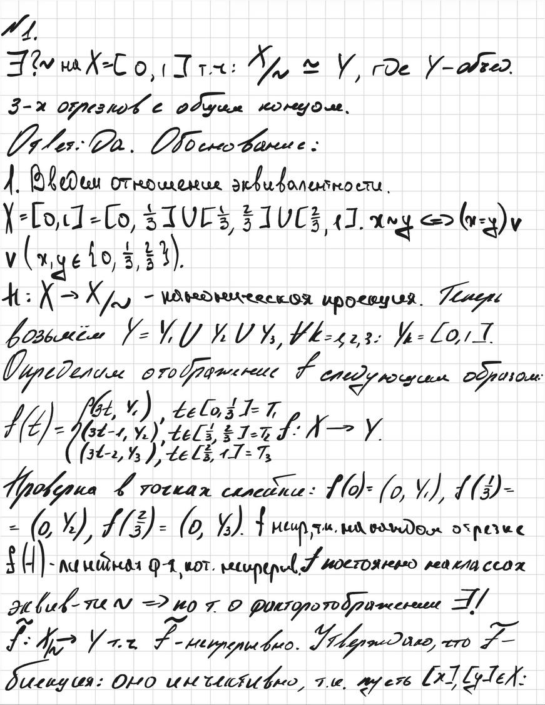

Учебник | Конспект | Бутылка Клейна

Страница 5 книги Аллена Хэтчера «Algebraic Topology»: поверхности и склейки многоугольников.

Пример работы с отношением эквивалентности и факторотображением.
Нажмите на миниатюру, чтобы открыть изображение 600 × 400 в новой вкладке.
На рисунке показана модель бутылки Клейна в трёхмерном пространстве с самопересечением. У самой абстрактной поверхности самопересечения нет.
Табаков Артём Владимирович, БМТ 255. Учебный проект.